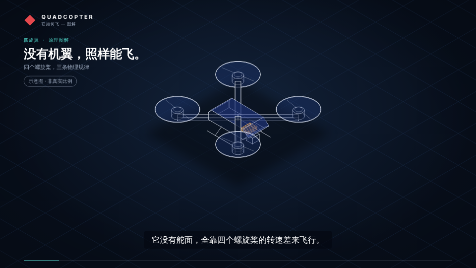
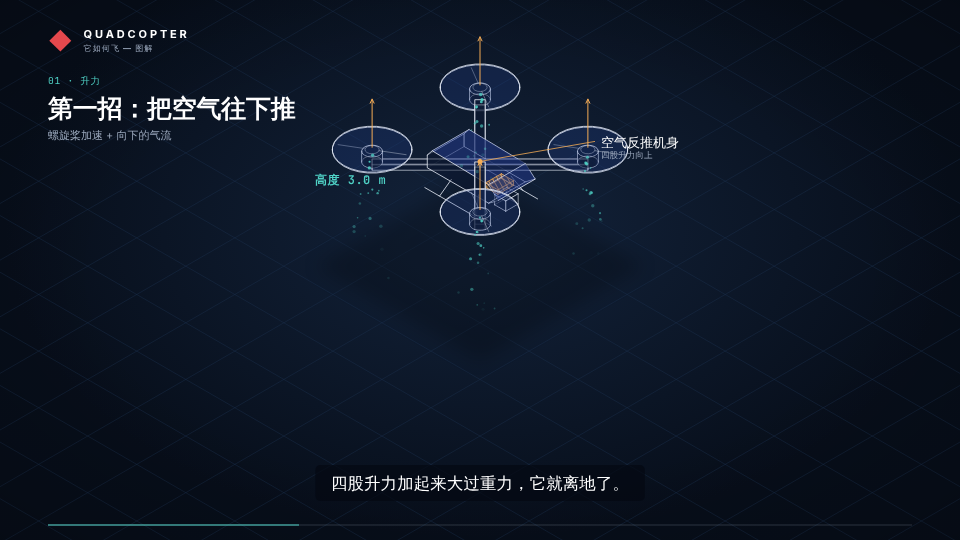
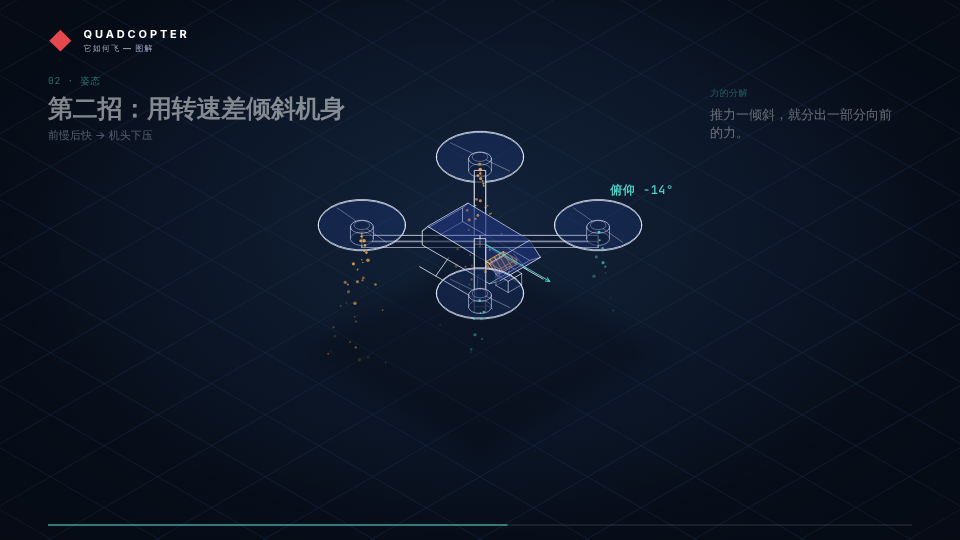
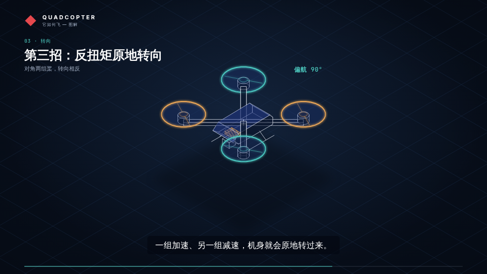
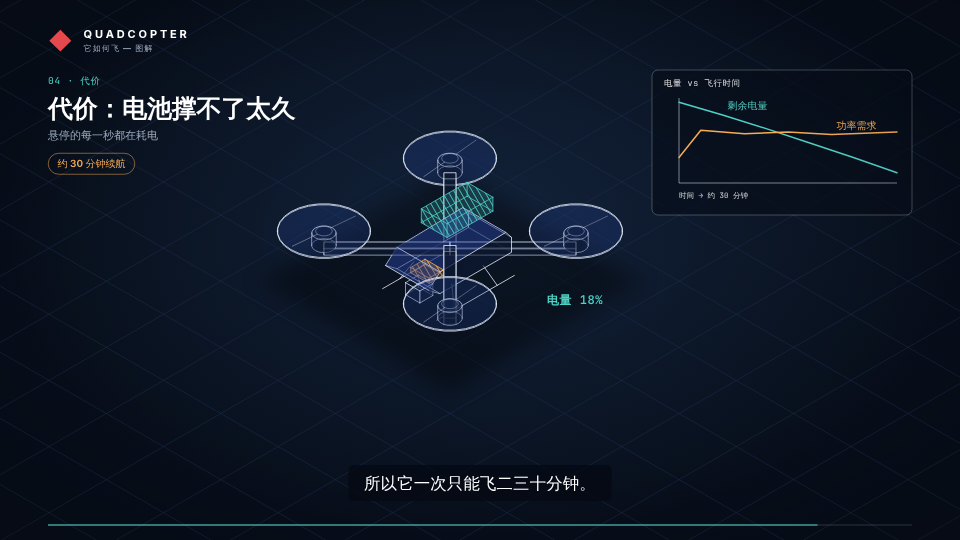

四旋翼无人机是怎么飞起来的
主题 四旋翼无人机：升力、姿态、转向与续航 · 受众 对科技感兴趣的大众 · 语言 zh-CN · 6 个镜头 · 总时长 0:58.0
调色板 midnight

S01
0:00.0 – 0:07.0 · 7.0s
这是一架四旋翼无人机。它没有舵面，全靠四个螺旋桨的转速差来飞行。
🎥 drone
build → drone

S02
0:07.0 – 0:19.0 · 12.0s
螺旋桨把空气往下推，空气就把机身往上推。四股升力加起来大过重力，它就离地了。
🎥 drone
highlight → drone.cw, drone.ccw
annotate → drone 「螺旋桨高速旋转」
emit → drone
force → drone
annotate → drone 「空气反推机身」
move → drone
readout → drone 「高度 {v} m」

S03
0:19.0 – 0:31.0 · 12.0s
让后面两个螺旋桨转得更快，机头就会微微下压。推力随之倾斜，分出一部分向前，无人机开始前进。
🎥 follow drone
emit → drone
emit → drone
annotate → drone 「后侧加速」
annotate → drone 「前侧减速」
move → drone
readout → drone 「俯仰 {v}°」
move → drone
force → drone
move → drone

S04
0:31.0 – 0:42.0 · 11.0s
四个桨两两反转，扭矩正好抵消。一组加速、另一组减速，机身就会原地转过来。
🎥 follow drone
highlight → drone.cw
highlight → drone.ccw
annotate → drone 「顺时针 × 2」
annotate → drone 「逆时针 × 2」
move → drone
readout → drone 「偏航 {v}°」

S05
0:42.0 – 0:52.0 · 10.0s
代价是：每一秒悬停都在消耗电池，所以它一次只能飞二三十分钟。
🎥 follow drone
build → drone.battery
highlight → drone.battery
annotate → drone 「锂电池」
readout → drone 「电量 {v}%」
chart → —
move → drone
S06
0:52.0 – 0:58.0 · 6.0s
这就是四旋翼无人机。
🎥 drone
emit → drone